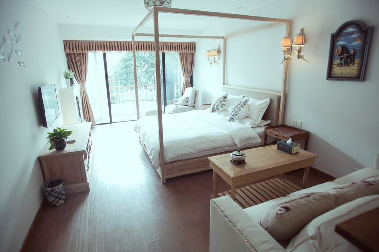
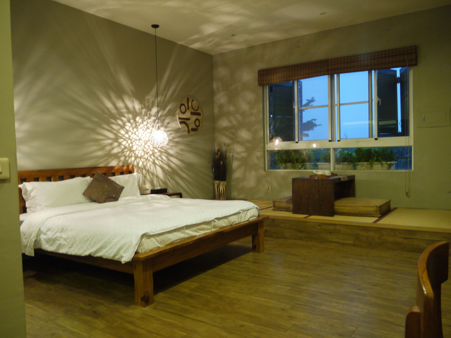

不二家，一家坚持以自己的构想来创建的旅馆，我们就是家。
只要你有故事，我就有茶。
言归正传，这是掌柜的办公区域一角，有什么问题都可以找我们~额，解决情感问题除外啊
喜欢安安静静唱歌的弹琴的也可以在这里给掌柜的来一曲（唱得好的，我考虑晚上让你去我们门口的广场来一曲）。
中国房
为了体现我们大中国古典的气质，特意选了木质的屏风，主色调是原木色和灰色，没有其他鲜明的颜色。走进去可以给人一种安静优雅~看到这里，喜欢中国房的赶紧返回我们的订房系统进行预订啦点击进入订房

这个和中国房有点相似的是韩国房，相对中国房来说，它的采光度较高，少了很多不必要的挂饰，比较简单舒适，致力于给您家一样的感觉。点击进入订房
泰国房

美国房
荷兰房
Ps:掌柜的拍照技术有待加强，其他房间的照片有时间了再上传，或者可以在一楼大厅找掌柜的要手绘图（掌柜的手绘图比较丑，看之前请慎重！！！）